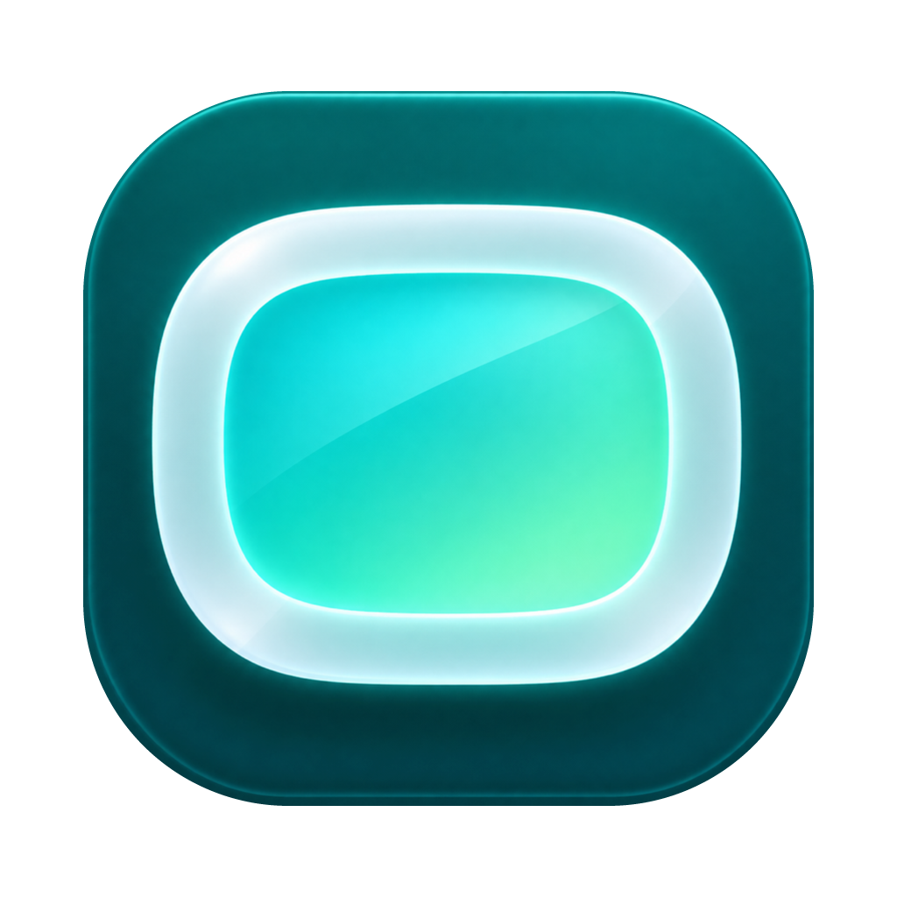

Oculo
Troisième tour, piste 1 « Le O-écran » seulement. Ce qui a changé depuis le deuxième tour :
- Logotype aligné : le bas de l’écran et le bas de toutes les lettres de « culo » sont sur une seule ligne, rien ne passe dessous ; le haut de l’écran est à la hauteur du haut du « l » : il se lit comme un O majuscule. L’épaisseur du cadre reprend celle des lettres, et l’espace entre l’écran et le « c » reprend celui que la police met entre un O et un c.
- Juste « Oculo » : la signature sous le nom est retirée partout (bannière, logotype, page).
- Icône nettoyée : les petites taches et le bord irrégulier autour de la tuile (surtout en haut) sont partis ; le contour est maintenant un arrondi net et lisse.
L’icône
La tuile seule, sur fond sombre et sur fond clair, puis aux petites tailles.

Le logotype
Le O de « Oculo » est l’écran : blanc sur fond sombre, sarcelle foncé sur fond clair.
Vérification de l’alignement
ligne du bas et ligne du haut (haut du « l »)hauteur des minuscules. Le bas de l’écran et le bas de chaque lettre touchent la ligne du bas ; aucun pixel ne passe dessous.
La bannière Android TV
320 × 180, le logotype seul, centré.
Sur l’écran d’accueil de la télé
Une rangée d’apps à la taille du lanceur, Oculo sélectionnée.

Oculo